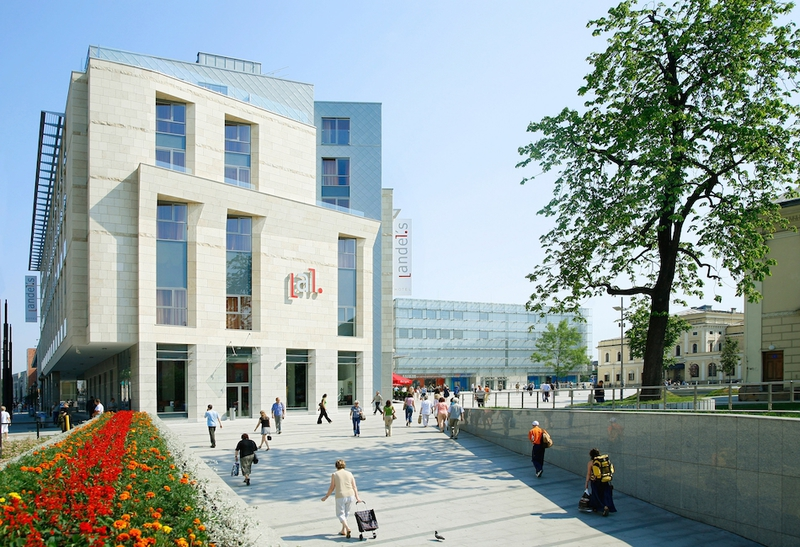

Intro
The first European edition of ElixirConf took place in beautiful Kraków on 23-24 April. Besides the 2 days of learning and community fun, a full day of tutorials on Elixir, OTP and Phoenix is scheduled for 22 April.
Conference Based Development with Joe Armstrong from Erlang Solutions on Vimeo.
About ElixirConf
Code of Conduct
ElixirConf is a community conference created to promote education, networking and collaboration within the Elixir/Erlang/Ruby communities.
We value the participation of each member of the community and want all attendees to have an enjoyable and fulfilling experience. Attendees are expected to act with decorum showing respect and acceptance to other attendees throughout the conference, and at all conference events, whether officially sponsored by ElixirConf or not.
All delegates, speakers, exhibitors and volunteers at ElixirConf are required to conform to the following Code of Conduct. Organizers will implement this code throughout the event.
Be honest
Use respectful language and actions
Be inclusive
Respect culture and custom
Consider your actions and act with integrity
Use good judgment and avoid even the appearance of improper behavior
Follow the law
Be accountable
If ever in doubt about a course of conduct, ask yourself:
Is it ethical?
Is it legal?
Will it reflect well on me as well as ElixirConf?
Would I want to read about it in the newspaper or on the web?
If the answer is “No” to any of these questions, don’t do it.
We want to thank you for helping make this a welcoming, friendly event for all.
Legal Details
Harassment includes offensive verbal comments related to gender, sexual orientation, disability, physical appearance, body size, race, religion, sexual images in public spaces, deliberate intimidation, stalking, following, harassing photography or recording, sustained disruption of talks or other events, inappropriate physical contact and unwelcome sexual attention.
Speakers, attendees, exhibitors, sponsors and vendors are subject to the code of conduct. Speakers, sponsors and exhibitors should not use profane, vulgar or sexual images, activities, or other material. Booth staff (including volunteers) should not wear revealing clothing/uniforms/costumes, or otherwise create a sexualized environment.
Talks should be appropriate for both a professional audience and a younger audience. Imagery and language (both written and spoken), are to be free of profane, vulgar or sexual content.
Participants asked to stop any harassing behavior are expected to comply immediately.
If a participant engages in behavior that violates this code of conduct, the conference organizers may take any action they deem appropriate, including warning the offender or expulsion from the conference with no refund.
Contact Information
If you are being harassed, notice that someone else is being harassed or have any other concerns, please contact a member of conference staff. Conference staff will be wearing "Staff" t-shirts. You may also contact the venue staff and ask to be put in touch with the conference organizers — Monika Jarzyna or Jim Freeze.
If the matter is especially urgent, please call/contact Monika at +44 7983 484 974 or Jim at +1 512 949 9683.
Conference staff will be happy to help participants contact venue security or local law enforcement or otherwise assist those experiencing harassment to feel safe for the duration of the conference. We value your attendance.
Programme
April 23, 2015
Tap on hour to see the talks
09:00 - 09:45 - Track
Registration
11:00 - 11:15 - Track
Break
12:45 - 14:00 - Track
Lunch
15:30 - 16:00
Break
17:30 - 18:00 - Track
Break
April 24, 2015
Tap on hour to see the talks
09:00 - 09:45 - Track
Welcome Tea and Coffe
11:00 - 11:15 - Track
Break
12:45 - 14:00
Lunch
15:30 - 16:00
Break
17:30 - 18:00
Break
18:00 - 19:00 - Track
Lightning Talks
Lightning Talks
Videos:
Lennart Friden - Let's Meetup!
Szymon Jeż - Best friends - Easier Communication?
Steven Holdsworth - Visualising Elixir Procs in 3D
Hans Robeers - finFoil
Jan Dudulski - Faraday
Wojtek Mach - Pattern Matching
Chris McGrath - Deploying Phoenix to Heroku
Jeff Weiss - Phoenix Framework
Gabi Zuniga - Lightning Talk
Slides:


Venue

Venue: Andel's Hotel
The hotel is easily accessible by car, train or plane, situated at the edge of the historic old town and next to the train station, bus terminal (PKP/PKS) and Kraków’s shopping centre Galeria Krakowska. The location is close to countless theatres and museums, Wawel Castle, the Main Market Square - the centre of Kraków, Kraków University and the former Jewish quarter of Kazimierz are all in the immediate area around the hotel.
IMPORTANT
For the timeframe of 21-24 April we have secured a room rate of 104 euro for a single standard room and 124 euro for a twin standard room at Andel Hotel. This includes a buffet breakfast and service charges. To book the room, please email Andel's at
MORE ROOMS AT HILTON GARDEN INN
We have secured 10 rooms at a special B&B rate for ElixirConf guests.
Adress:
Hilton Garden Inn Krakow - Map
Marii Konopnickiej 33, 30-302 Kraków
Prices: Single Room: 250 PLN (≈ 60 EUR )
Double Room: 290 PLN (≈ 70 EUR)
*Prices include access to the swimming pool. To fill in the reservation form click HERE
ul. Pawia 3, 31-154 Kraków, Poland
Kraków's Balice Airport (KRK) is just 15 km away. With a regular express train to the main railway station, the hotel can be reached in just 12 minutes. The Katowice/Pyrzowice Airport is 80 km away.
The famous Salt Mine in Wieliczka is around 15 km away from the design hotel.
The trip from the airport to the hotel or vice versa is also possible with our comfortable hotel taxi. Parking is available in the hotel’s own underground car par\ k.
By plane:
Distance:
15 km KRK Balice Airport
Approx travel time 30 minutes by taxi
Regular express train to the main railway station - 12 minutes.
80 km Katowice Pyrzowice Airport
By train:
Distance:
100 m Railway and coach stations (PKP/PKS)